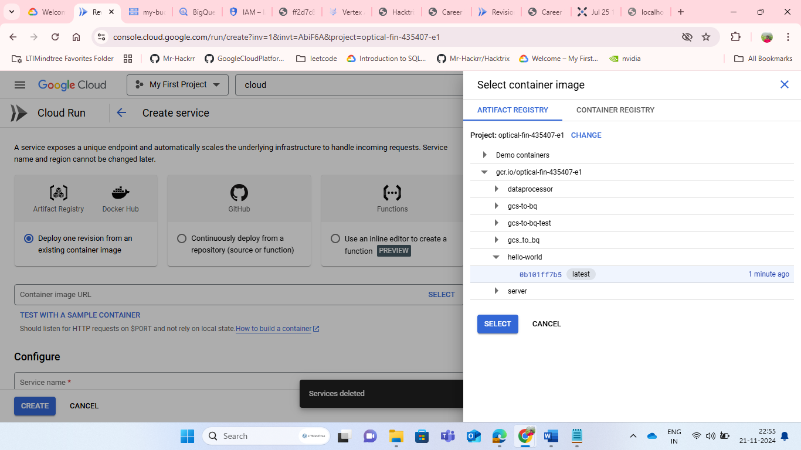

Easily Scale Your Apps with Cloud Run
Want to build and deploy apps without worrying about the backend? Google Cloud Run is here to help. It's a simple, managed platform that lets you focus on coding while it handles the rest. Let's explore how Cloud Run can make your life easier.
What is Cloud Run?
-
Pack Your App
Put your app and its dependencies into a single container.
-
No Server Worries
Cloud Run manages the servers for you, scaling up or down as needed.
-
Works for All Apps
Whether your app stores data or not, Cloud Run supports both types.
Benefits You'll Love
-
Scale Automatically
Your app grows, Cloud Run grows with it.
-
Secure by Default
Enjoy top-notch security with easy access controls.
-
Easy Monitoring
Understand your app's performance at a glance.
-
Pay Only for What You Use
No surprise bills, just fair pricing.
Real-Life Uses of Cloud Run
-
Web Apps
Grow your user base without backend headaches.
/* Example code for web app deployment */ -
APIs & Microservices
Easily integrate and scale individual services.
-
Event-Driven Apps
React to events in real-time with Cloud Run.
-
AI/ML Models
Deploy machine learning models as easily as web apps.
Example: "Image Resizer" - A Serverless Image Processing Service
Scenario:
-
Company:
GreenEarth, an e-commerce platform for eco-friendly products.
-
Challenge:
- Ensure all product images are resized to three standard dimensions (thumbnail, medium, large) for consistent display across their website and mobile app.
- Offload image processing from their main application to improve performance and reduce latency.
Solution:
Deploy an "Image Resizer" service on Cloud Run.
How it Works:
-
Trigger:
Whenever a new product image is uploaded to GreenEarth's Cloud Storage bucket.
-
Cloud Run Service: "Image Resizer"
-
Containerized Application:
- Written in Node.js using Sharp (image processing library).
- Listens for new image uploads in the designated Cloud Storage bucket.
-
Functionality:
- Downloads the newly uploaded image.
- Resizes the image into three predefined dimensions (thumbnail, medium, large).
- Uploads the resized images back to a separate Cloud Storage bucket.
-
-
Output:
Three resized images for each uploaded product image, stored in Cloud Storage.
Cloud Run Configuration:
-
Platform:
Cloud Run (fully managed)
-
Container:
Node.js 14 with Sharp library
-
Trigger:
Cloud Storage bucket upload trigger
-
Scaling:
Automatic scaling with a minimum of 0 instances and a maximum of 10 instances
-
Memory Allocated:
512 MB
-
Timeout:
5 minutes (to handle large image processing)
Benefits for GreenEarth:
-
Scalability:
Automatically handles increased image uploads during sales or new product launches.
-
Performance:
Offloads resource-intensive image processing, ensuring the main application remains responsive.
-
Cost-Effectiveness:
Only pays for the actual compute time used by the "Image Resizer" service.
-
Security:
Leveraging Cloud Run's built-in security features and automatic updates.
Containers and Microservices
Containers
-
Definition:
Lightweight and standalone executable packages that include everything an application needs to run (code, dependencies, libraries, settings).
-
Key Benefits:
-
Isolation:
Run multiple containers simultaneously without conflicts.
-
Portability:
Deploy containers across different environments (dev, staging, prod) without worries.
-
Efficiency:
Optimize resource utilization (e.g., CPU, memory).
-
Microservices
-
Definition:
Software development technique that structures an application as a collection of small, independent services.
-
Key Benefits:
-
Scalability:
Scale individual services as needed.
-
Flexibility:
Use different programming languages, databases, or frameworks for each service.
-
Resilience:
If one service fails, others remain operational.
-
Containerization Examples
-
Netflix's Content Delivery Network (CDN):
-
Use Case:
Netflix uses Docker containers to package and deploy its CDN servers globally, ensuring consistent and fast content delivery.
-
Benefits:
Reduced deployment time from hours to minutes, increased scalability, and improved resource utilization.
-
-
PayPal's Payment Processing:
-
Use Case:
PayPal utilizes containers to isolate and deploy multiple payment processing services, ensuring high availability and security.
-
Benefits:
Improved fault tolerance, reduced latency, and enhanced security through isolation.
-
-
Spotify's Music Streaming:
-
Use Case:
Spotify employs containers to deploy and manage its music streaming services, allowing for seamless scaling and updates.
-
Benefits:
Increased agility, reduced costs, and improved user experience through faster deployment of new features.
-
Microservices Examples
-
Amazon's E-commerce Platform:
-
Use Case:
Amazon's platform is built as a collection of microservices, each responsible for a specific function (e.g., product catalog, order processing, payment gateway).
-
Benefits:
Enhanced scalability, improved fault tolerance, and increased development velocity.
-
Scaling E-commerce Success with Cloud Run: The Story of "FashionFrenzy"
Background:
FashionFrenzy, a trendy online clothing store, was launched in 2020 by two entrepreneurs, Emma and Ryan. Initially, the website was built on a traditional monolithic architecture, hosted on a single virtual machine. As the brand gained popularity, especially among young adults, the site faced scalability issues, leading to frequent crashes during peak shopping seasons (e.g., Black Friday, Holiday Sales).
Challenges Faced by FashionFrenzy:
Solution:
Emma and Ryan decided to migrate FashionFrenzy to Google Cloud Run to leverage its serverless, scalable, and secure environment.
Implementation Highlights:
Quotes from FashionFrenzy Founders:
Step 1: Create a Simple "Hello World" Flask App
- Create a new directory for your project and navigate into it:
mkdir flask-cloudrun-example cd flask-cloudrun-example - Create a file named
app.pywith the following content:from flask import Flask app = Flask(__name__) @app.route("/") def hello_world(): return "Hello, World from Cloud Run!" if __name__ == "__main__": app.run(debug=True, host="0.0.0.0", port=8080)
Step 2: Dockerize Your Flask Application
- Create a Dockerfile in the same directory with the following content:
FROM python:3.9-slim WORKDIR /app COPY . . # Install any needed packages specified in requirements.txt RUN pip install --trusted-host pypi.python.org flask # Make port 8080 available to the world outside this container EXPOSE 8080 # Define environment variable ENV NAME World # Run app.py when the container launches CMD ["python", "app.py"]
Step 3: Build Your Docker Image
- Build your Docker image by running:
docker build -t hello-world . docker tag hello-world gcr.io/[YOUR_GCP_PROJECT_ID]/hello-worldReplace
[YOUR_GCP_PROJECT_ID]with your project ID.
Step 4: Push Your Image to Google Container Registry (GCR)
- Configure Docker to use gcloud as a credential helper, then push your image:
gcloud auth configure-docker docker push gcr.io/[YOUR_GCP_PROJECT_ID]/hello-worldReplace
[YOUR_GCP_PROJECT_ID]with your project ID.
Step 5: Deploy to Cloud Run (Console)
- First, open Cloud Run console and click "Deploy Container":
- Select the container from Google Container Registry:

- Give a name to your service and click "Create":

- After deployment, click on the link to view your "Hello, World from Cloud Run!" message:

Step 6: Verify Your Deployment
- After deployment, the
gcloud run deploycommand will output a URL. - Visit this URL in your web browser to see your "Hello, World from Cloud Run!" message:

- Alternatively, you can find the URL in the Cloud Console under the Cloud Run section for your service.
Congratulations! You've successfully deployed a Flask "Hello World" application as a Docker container to Google Cloud Run.
Environment Variables: Setup and Usage in Cloud Run
What are Environment Variables?
Environment Variables (Env Vars) are key-value pairs that store sensitive information or configurable settings for your application, separate from your code. This approach enhances security and makes it easier to manage different environments (e.g., dev, staging, prod).
Setting Up Environment Variables in Cloud Run
Using the Google Cloud Console
- Navigate to Cloud Run: Open the Google Cloud Console, select your project, and click on Cloud Run.
- Select Your Service: Choose the service for which you want to set environment variables.
- Click on "Variables": In the service's left sidebar, click on Variables (under Settings).
- Add Variable:
- Click Add Variable.
- Enter the Key (name) and Value for your environment variable.
- Optionally, select Is secret to encrypt the value.
- Click Save.

Using the gcloud Command-Line Interface (CLI)
- Install/Update gcloud CLI: Ensure you have the latest gcloud CLI installed.
- Set Environment Variable:
gcloud run services update--set-env-vars = Replace
Using Environment Variables in Your Application
- Access Env Vars in Code: Use standard environment variable access methods for your programming language. For example, in Node.js:
process.env.MY_VARIABLE.
const myVariable = process.env.MY_VARIABLE;Example Use Case:
Store a database connection string as an encrypted environment variable (IS_SECRET enabled) to keep it secure across different environments.
Scaling and Traffic Splitting
Autoscaling Features:
Cloud Run's Autoscaling automatically adjusts the number of container instances based on incoming traffic, ensuring efficient resource utilization and optimal responsiveness.
- Scaling Metrics:
- Concurrency (default): Scales based on the number of concurrent requests.
- CPU Utilization: Scales based on the average CPU usage across instances.
- Scaling Settings:
- Minimum Instances: The lowest number of instances to maintain.
- Maximum Instances: The highest number of instances to scale up to.
- Scaling Settings:
- Minimum Instances: The lowest number of instances to maintain.
- Maximum Instances: The highest number of instances to scale up to.
- Target Value (for CPU Utilization or Concurrency): The threshold that triggers scaling.
Configuring Autoscaling in Cloud Run
Using the Google Cloud Console
- Navigate to Cloud Run, select your service, and click on Settings.
- Scroll to "Scaling": Adjust the scaling settings as desired (e.g., change the Minimum Instances, Maximum Instances, or Target CPU Utilization).
- Click Save.

Using the gcloud CLI
gcloud run services update --platform managed --region \
--min-instances --max-instances \
--cpu-threshold --cpu-target-utilization-percentage Replace placeholders with your actual values.
Handling Multiple Versions with Traffic Splitting
What is Traffic Splitting?
Traffic Splitting allows you to divert a percentage of incoming traffic to different versions of your service, enabling A/B testing, canary releases, or rolling out updates with minimal risk.
Configuring Traffic Splitting in Cloud Run
Using the Google Cloud Console
- Navigate to Cloud Run, select your service, and click on Traffic Splitting.
- Add a New Split:
- Select the Service Version to split traffic to.
- Set the Percentage of traffic to divert.
- Click Save.

Using the gcloud CLI
gcloud run services update-traffic --platform managed --region \
--to-revisions = Replace
- Minimum Instances: The lowest number of instances to maintain.
- Maximum Instances: The highest number of instances to scale up to.
- Target Value (for CPU Utilization or Concurrency): The threshold that triggers scaling.
Configuring Autoscaling in Cloud Run
Using the Google Cloud Console
- Navigate to Cloud Run, select your service, and click on Settings.
- Scroll to "Scaling": Adjust the scaling settings as desired (e.g., change the Minimum Instances, Maximum Instances, or Target CPU Utilization).
- Click Save.
Using the gcloud CLI
gcloud run services update --platform managed --region \
--min-instances --max-instances \
--cpu-threshold --cpu-target-utilization-percentage Replace placeholders with your actual values.
Handling Multiple Versions with Traffic Splitting
What is Traffic Splitting?
Traffic Splitting allows you to divert a percentage of incoming traffic to different versions of your service, enabling A/B testing, canary releases, or rolling out updates with minimal risk.
Configuring Traffic Splitting in Cloud Run
Using the Google Cloud Console
- Navigate to Cloud Run, select your service, and click on Traffic Splitting.
- Add a New Split:
- Select the Service Version to split traffic to.
- Set the Percentage of traffic to divert.
- Click Save.
Using the gcloud CLI
gcloud run services update-traffic --platform managed --region \
--to-revisions = Replace